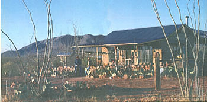
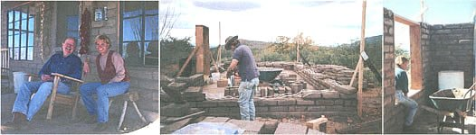
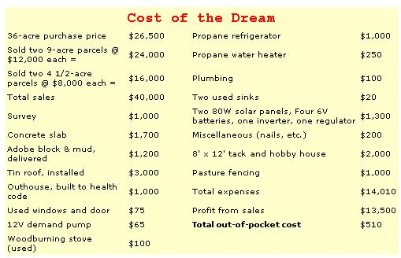
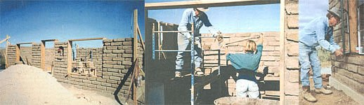
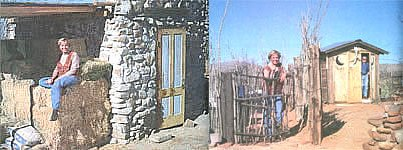

LIVING THE DREAM
Years ago, someone told me,"If you want it bad enough, don't take 'No' for an answer. Every problem has a solution... spend your energy on the solution, not the problem." That advice has worked miracles for me.
Two years ago, coming out of a marriage that should never have been, I was determined to take care of myself. At forty-six, feeling very middle-aged and alone, my utmost desire was to have a nest of my own. My dilemma was that I had only $5,000 and no job. I wanted to live an alternative lifestyle on the land, and I had long before made a promise to myself that I would accomplish this without going into debt. The promise also included a conviction that I would never look back.
Finding affordable land was a challenge. I needed something I could buy - with a small down payment and low monthly payments - that was dividable yet attractive enough that I would want to live there the rest of my life. I was also aware that I would have to find this humble property and then turn it into my Shangrila; really gorgeous land was far beyond my pocketbook. Watching the land ads in the newspapers and contacting almost every real estate agent in a hundred-mile area in southeastern Arizona - the area I chose - was an education in itself. I stuck to my price range and did not look at more expensive properties, even though agents desperately tried to push me that way.
Once I found a few candidates, I went to the planning and zoning department of the county to find out if the land was dividable and what, if any, restrictions applied. Do not trust anyone's word on these matters. Go to planning and zoning and get their recommendations in writing . The process may well be Greek to you, but as long as you make it plain that you require the kindergarten explanation, almost everyone will be extremely helpful. Even if you are going through real estate agents to find your land, be prepared to do most of the legwork yourself. They do not make large commissions on cheap land and are not very willing to spend time, gas, and money showing it.
I found many ranchers, farmers, and large property owners selling off forty-acre parcels, generally with 20% down and monthly payments for ten to fifteen years at 10% interest. Once you find your land, go through a reputable title company and be sure to do a title search before the deal closes. The last thing in the world you want is to be unable to get a clear deed to a piece of land because of title complications.
I finally located thirty-six acres here in southeastern Arizona. The land was remote enough to provide privacy, yet close enough - about twenty miles - to a large town where decent jobs were a reasonable drive away. The land was beautiful, with 360° views of the Mule and Huachuca Mountains. The desert vegetation was wonderful : ocotillo, prickly pear cactus, mesquite trees, hackberry, black walnut trees, as well as mule deer, wild birds, and even an occasional rattlesnake.
The trade-off for cheap, beautiful land was a very deep water table, very nearly a thousand feet down. Electric and phone service were not available. The lack of utility service didn't really keep me up at night, but I own a horse that drinks ten gallons a day! More on that in a bit.
The land fit all of my criteria and the purchase price was affordable: $26,500, with down payment and closing costs of $4,000. I jumped into the deep end and bought it. The bank financed the loan for fifteen years at 10% interest, which put the monthly payments at $278. Of course that would not do, so I took my last $1,000, had the land surveyed, and split it into five parcels: three nine-acre lots and two four-and-a-half-acre lots.
Getting a survey done was nearly as exhausting a process as finding the land. Calling every survey company in the book yielded five different quotes. The lowest bid was $1,500, but there was still just $1,000 in my pocket. A little negotiating lowered the price, and I in turn agreed to assist in the surveying. I did all the gofer work, held equipment, etc. Once the survey was finished and recorded, I had the property descriptions and papers drawn up by a reputable title company. They would be paid when the parcels were sold. I promptly found four eager buyers for my split parcels. I sold the two nine-acre parcels for $12,000 each and the four-and-a-half-acre parcels for $8,000 each. Finding the buyers was fairly easy. When I found the whole thirty-six-acre parcel, I put the word out immediately that I was splitting and selling off parcels. I was also selective about whom I sold to, as I knew they would end up being my neighbors. A couple of parcels were sold "on time," or through what is called a land contract. I received 20% down. They paid all the closing costs and agreed to make monthly payments for ten years at 10% interest. It is also fairly easy to sell with a mortgage on these terms if you want the cash up front, but be prepared to get less than the original selling price in the process. Locating and purchasing the land, splitting it up, and selling the parcels took all of about forty-five days. I then had my nine acres paid for, my $5000 back, and a nice $13,500 profit from the sale of my lots: seed money to start building my home.
My salvation was my sixty-nine-year-old brother-in-law Walt and my sister Jill, who live nearby in Bisbee, Arizona. They believed in my venture from the beginning and encouraged me to pursue my dream, even when it was just that .
Walt is my teacher, my mentor, my building brain, my extra pair of hands, and my hero. While we considered the project, he insisted upon two things from the beginning. Numero uno was "Do it right and build to code." We have no building codes in Cochise County, Arizona but we do have health, zoning, and flood plain codes. Numero dos was his stipulation that he would teach me how to do the work, not do the work himself while I watched. Not even for a moment did he treat me like a nincompoop, even when I asked some howlingly dumb questions and did some mighty dumb things.
I decided on a plan for a fourteen-by-twenty-six-foot adobe casita, designed around a passive-solar heating and cooling floor plan, with south-facing windows and a tin roof with two porches, to aid water collection. I initially purchased the stabilized adobe block and mud, but adobe can also be readily made; I have made it for other projects. All the lumber, doors, bathroom fixtures, windows, headers, etc., were scrounged from local junkyards or were given to me. At first, the process of snooping around for excess materials made me slightly uncomfortable, but I quickly came to the conclusion that being broke and shy created mutually useless situations. I stopped at re-modeling jobs, new construction sites, even the dump. Soon people were bringing me more used building materials than I could use. With a little luck, I was able to trade these extra materials for items I needed. Enthusiasm is contagious. Share your dream, and you'll find goodwill in the farthest corners and the darkest spaces.
I had the foundation and the roof done by licensed contractors. They were beyond the scope of Walt's and my abilities, and of course turned out to be my biggest expenses. Walt and I did rest the by ourselves, from mixing mud and laying the adobe, to installing windows, headers, bond beam, gas lines, plumbing etc.
First, I laid out the floor plan, with emphasis on properly siting the windows and doors. We then built the door frame and set it in place. Next, we put up story poles on the corners, so the building would go up straight and plumb. We could then begin laying the adobe block. I would mix the mud, and wheelbarrow it to Walt. He laid most of the block. At the two-foot level, we put in the electrical wiring on a course of block and covered it with metal flashing. All wood exposed to adobe was covered with metal lathe, so the mud would stick. As the adobe reached the top of the windows and door frames, we placed headers, using railroad ties I purchased for $3 each at the dump. We left a foot on either side to stabilize and tie-in the adobe walls. One foot further we put in anchor bolts and began framing-in for a concrete bond beam. A bond beam is a continuous pour of concrete, tying the whole structure together. We framed up a box ten inches high and twelve inches thick, wired it into place, and then ran a continuous double row of rebar, circling the entire structure. We left the foundation anchor-bolts exposed by several inches that later allowed us to tie-in the wood top-plate. We hired a concrete pumper to do the pour. We removed the wood frames and then reused them for the top-plate.
Finding carpenters to put on the roof was no easy job. I only had $3,000 in the budget to do it, a drop in any contractor's normal budget bucket. The quotes came in and were several thousand dollars more than I could afford. Just when I was ready to settle for a flat roof with no porches, a contractor team of two brothers came to my rescue. Mark and Mike Gruey of Bisbee, Arizona, agreed to supply used lumber and more than honest and fair workmanship in producing a very high grade of galvanized tin roof. They cut their profit to help me, and in return I have recommended them highly for other jobs. With the roof installed, we put in the windows, Sheetrocked the ceiling, plastered the inside walls with adobe, painted the walls white with a lime plaster, and painted the concrete floor. Walt and I built all the sink cupboards and closets with used lumber we scrounged or were given.
We worked every day for three months. In January, 1996, I set foot into my new home. We set up a two-thousand-gallon water tank. I collect rainwater off eight hundred square feet of roof; the water runs from a gutter system into the tank. A 12V demand pump supplies the house with water, but drinking water has to come from the town - a small compromise with independence, but I can live with it. One inch of rain gives me about eight hundred gallons of free water. My horse and I split six hundred gallons fifty-fifty.
The house is all solar-powered. Two 80W solar panels, mounted on the roof and facing south, supply power to four 6V batteries wired in series to produce 12V power. I use it to power the demand pump, cellular phone, and 12V television and VCR. I also have an inverter that gives me 110V to run conventional lights, a radio, fan, blender, and word processor. On those rare occasions when I need to dress up, I heat an old-fashioned iron in a flying pan and use a propane curling iron. My solar system is very simple, extremely affordable, and is designed so that I could easily add more panels and batteries to increase my electrical supply. I do have a generator for emergencies. It was used to run power tools while building the house, but I rarely use it now. Propane powers my refrigerator, gas stove, and the six-gallon water heater. I heat the house with a woodburning stove, but even in the winter, the sun keeps the house warm until sunset.
The Gruey brothers carpenters had an old wood shed in their backyard. I purchased it from them with the intention of setting up a simple shed. Soon, with much help from the brothers, we added two porches to the small shed, rocked up a foundation, finished the inside, and saw that we had produced not only a tack room and bead house (for crafts), but space enough to run a home business.
All the esthetic items in my home were Mother Nature's gifts: rock walls, cactus landscaping, ocotillo fences, used lumber.
We built a two-seater outhouse, to code, with used lumber. Outhouses and composting toilets are legal here. A septic tank is a must for the black water; sink or gray water can be filtered and used on plants.
While working with foundation rocks, I quickly became enthused and decided to attempt a rock building by myself. What started out to be a tool room turned into a guest house and cantina. Every morning for about six months, I would haul one or two loads of rocks and sand from alongside our rocky roads. I dug a ten-inch-deep footer for a ten-by-fourteen-foot house, purchased fifteen ninety-pound bags of Portland cement and began laying up the rocks. I set a door frame and found two used windows. As the walls reached shoulder height, my slight frame could just not lift the rocks, so I hired a helper for the week at $40 a day. The rafters were four-inch pine poles my daughter let me cut from her mountain property. The roofing cost me about $100. Within a week, the casa was finished, for a total cost of $390. I even built an adobe rock fireplace. While not an adventure in gorgeous design, the fireplace looks the part, warms the cantina, and the smoke goes up.
I accomplished all this in less than a year, with $5,000 in my pocket and no job. Today I own my casita, my land, have electricity, hot and cold running water, and no bills, ever. After the initial land purchase, lot sales, and minus building expenses, I figure my nest actually cost me $510.
After this experience, the best advice I can give anyone is: just follow your dream. When things seem monumental - and they will - don't look at the total picture. Take one day at a time. Dwell on figuring out the problems. Half the fun, believe it or not, is overcoming them.
I have my castle, now the only thing missing is a prince!
|
 Tina Miller bought her new land, built her home, and supplied the utilities for less than the price of a family car. |
 Left: Tina and Walt in front of the dream home. Center: Walt wiring the home for both 12V and 110V. Right: Tina takes a break from moving mud. |
 Left: windows framed and adobe going up. Center: Tina throws some mud up to Walt. Right: Walt placing one of the several scrounged windowpanes used to make picture windows. |
|
 Left: Tina next to her nearly-completed native-stone cantina. Right: Tina (with Walt in the background caught at an unfortunate moment) poses next to her plumbing solution. |
 |
|